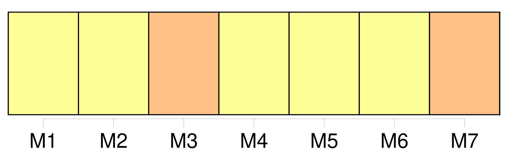
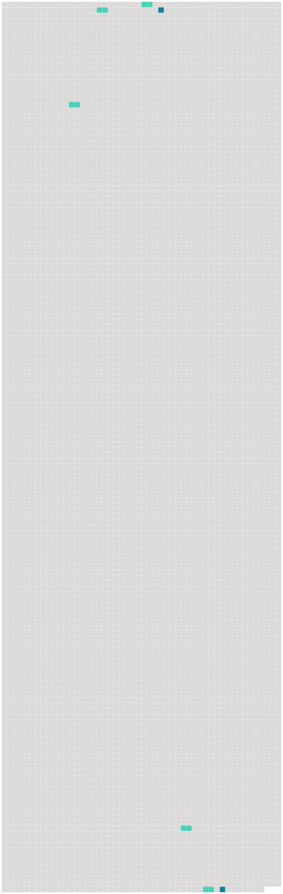

Longueur nb maillons : 7 mentions |
 |
Pendant des années, j'ai entendu rue d'Ulm et dans les salles de la Sorbonne des hommes importants qui parlaient au nom de [l'Esprit] [1 phrases] Ils entrent dans les corps savants, ils convoquent des congrès pour décider des progrès que [l'Esprit] a faits dans une année et de ceux qui [lui] restent à faire. [31 phrases] Bouffons, complices : métiers de [l'esprit] [240 phrases] Les armatures de [l'esprit] sont des objets en bois, en métal, en protoplasme, en verre, en tissu, des cubes, des sphères, des vivants, des boîtes, des moteurs, des apparitions visibles, des formes qu'on touche, des airs bruyants. [17 phrases]
Il pèle et il tombe : où [l'esprit] trouverait [-il] le temps de penser à mal. |
 |
Il est possible de télécharger la ressource sur la page Ortolang |
Si vous avez des questions ou vous voyez des erreurs, merci d'envoyer un mail à silvia.federzoni89@gmail.com |